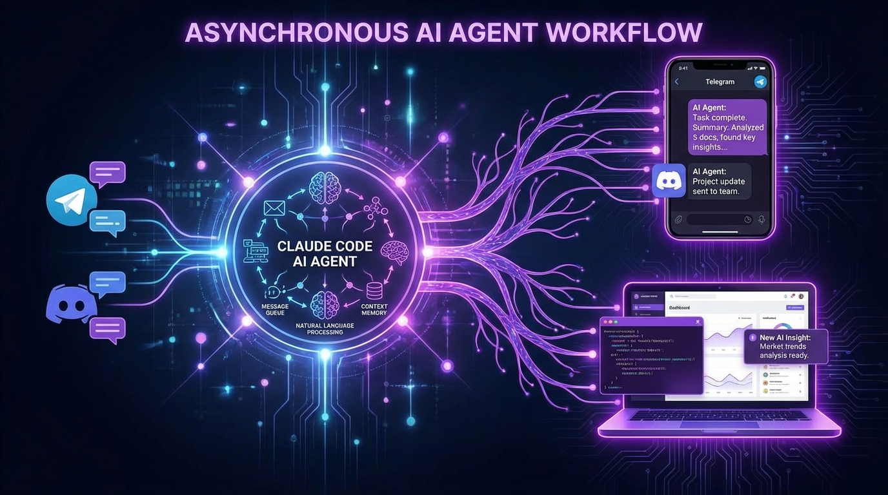

On March 20, Anthropic dropped a feature that should make every agent orchestration platform nervous: Claude Code Channels. The ability to message your AI coding agent directly through Telegram and Discord. Simple idea. Potentially massive implications.
Let me explain why this matters—and why platforms like OpenClaw should be paying very close attention.
How It Works
The setup is surprisingly straightforward:
- Create a bot via BotFather (Telegram) or the Discord Developer Portal
- Install the official Claude Code plugin in your terminal
- Configure with your bot token
- Pair by DMing the bot and entering a pairing code
Once connected, your Claude Code session runs locally but communicates through messaging platforms. You can send instructions from your phone, get updates when tasks complete, and maintain an asynchronous relationship with your AI agent.
The magic is in the Model Context Protocol (MCP)—Anthropic's open standard for two-way communication between AI systems and external tools. Events flow from Telegram/Discord into your running Claude Code session. Responses flow back out. It's elegant in its simplicity.
The Asynchronous Agent Revolution
Here's what changes: AI agents are no longer desktop-bound applications you babysit. They become persistent workers you can check in on from anywhere.
Imagine this workflow:
- You're commuting. A bug report comes in. You fire off a quick message to Claude Code: "Investigate the authentication issue in the auth module."
- Claude starts working. It explores the codebase, identifies the problem, proposes a fix.
- You get a Telegram notification: "Found the issue. The JWT validation is missing the exp check. Proposed fix attached."
- You review on your phone, reply "Apply the fix and run the test suite."
- Claude applies the patch, runs tests, reports back: "All tests pass. Commit and push?"
This isn't science fiction. This is Claude Code Channels today.

Why This Threatens Orchestration Platforms
Platforms like OpenClaw built their value proposition on agent orchestration—managing multiple AI agents, coordinating their work, providing persistent context across sessions. It was a necessary layer because the underlying models didn't have these capabilities built-in.
Claude Code Channels changes the equation. If Anthropic's agent can:
- Run persistently on your local machine
- Communicate via standard messaging protocols
- Maintain context across asynchronous interactions
- Integrate with external tools through MCP
...then what's left for the orchestration layer to do?
The answer, for now, is "plenty." OpenClaw and similar platforms still provide value through:
- Multi-agent coordination (Claude Code is single-agent)
- Complex workflow orchestration
- Integration with non-Anthropic models
- Enterprise security and compliance features
But the trend is clear. The models are absorbing the orchestration capabilities that used to require separate platforms.
The Open Source Angle
The official Telegram and Discord plugins are open source and hosted on GitHub. Anthropic is explicitly inviting community contributions and connectors for other platforms like Slack or WhatsApp.
This is smart strategy. Rather than building every integration themselves, Anthropic is creating a standard (MCP) and letting the community extend it. The result is an ecosystem that grows faster than any single company could manage.
The $100 Million Partner Network
Claude Code Channels didn't launch in a vacuum. On March 12, Anthropic announced the Claude Partner Network with an initial $100 million investment to support enterprise adoption. They're backing the technical capability with serious resources to get companies using it.
The message to enterprises is clear: Claude isn't just a chatbot. It's a platform for building autonomous AI workflows. And now those workflows can integrate with the communication tools your team already uses.
What About the Competition?
OpenAI has to be working on something similar. The question is whether they'll match Anthropic's open approach or try to lock users into their own ecosystem. Given OpenAI's recent moves toward platform dominance, I'd bet on the latter—but I could be wrong.
For now, Anthropic has a meaningful first-mover advantage in agent-to-platform communication. The MCP standard is gaining traction. The plugins work well. The developer experience is polished.
The Bottom Line
Is Claude Code Channels an "OpenClaw killer"? Not yet. But it's a shot across the bow.
The agent orchestration space is being compressed from both ends. Foundation models are getting more capable of autonomous action. Communication platforms are getting better at AI integration. The middle layer—the dedicated orchestration platform—has to evolve or risk being squeezed out.
For developers, this is great news. More options, better integration, lower friction. For orchestration platforms, it's a wake-up call. The models are coming for your lunch.
The question isn't whether agent orchestration will exist in five years. It's whether it'll exist as a separate product category—or as a feature built into every major AI model.